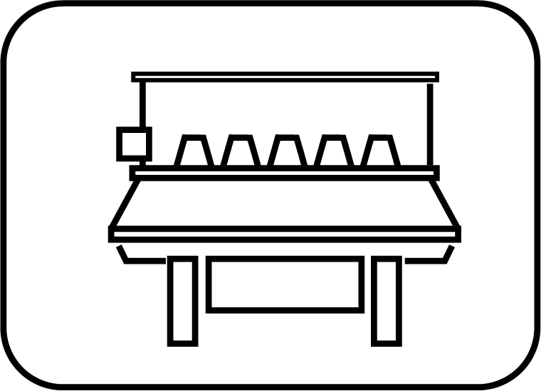
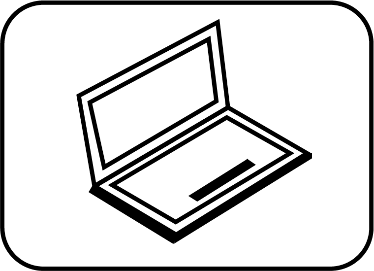
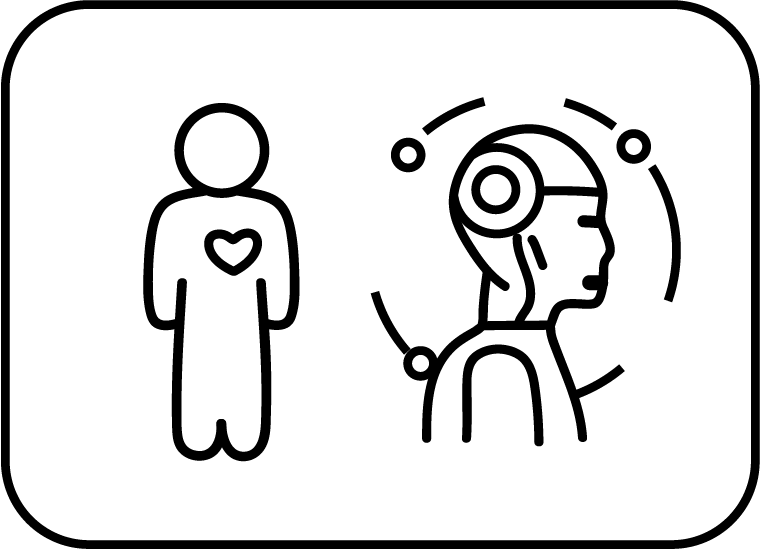
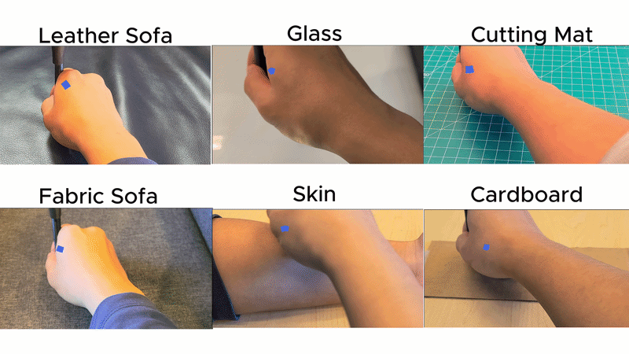
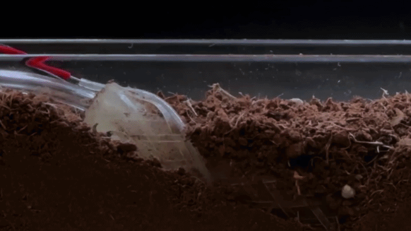
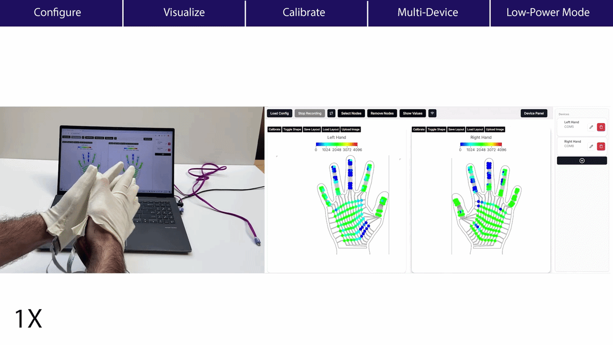
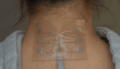
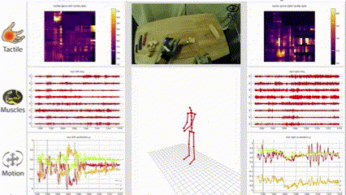
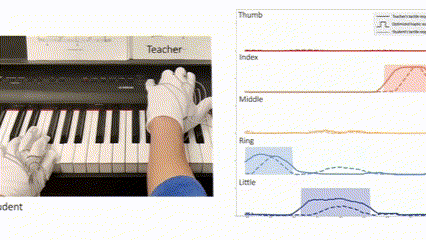

Fabrication
We leverage digital fabrication for scalable, customized, and multimodal wearable interfaces.
PI: Yiyue Luo
Assistant Professor
Electrical and Computer Engineering
University of Washington
The Wearable Intelligence Lab takes interdisciplinary approaches to push the boundaries of wearable technology and AI integration for impactful applications in healthcare, robotics, and human-computer interactions. We particularly focus on the scalability, seamless integration, robustness, and adaptivity of end-to-end intelligent wearable systems.

We leverage digital fabrication for scalable, customized, and multimodal wearable interfaces.

We explore computational approaches that help wearable interfaces work reliably in the real world.

We investigate wearable intelligence for healthcare, robotics, and human-computer interaction.





